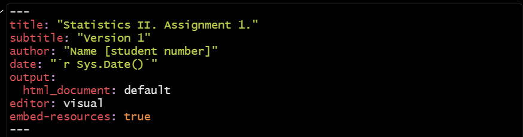
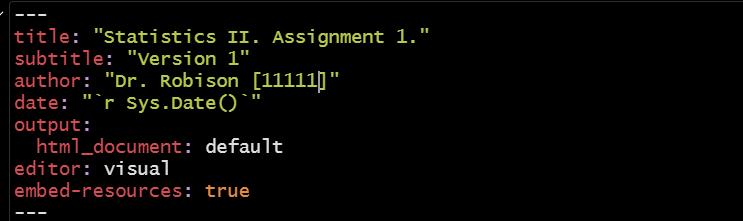
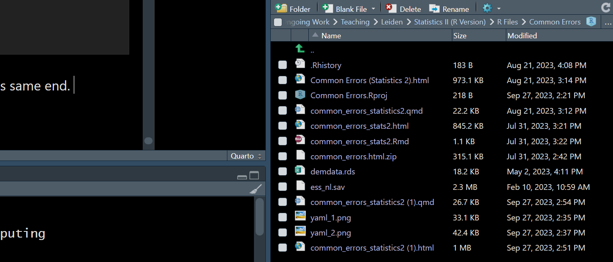
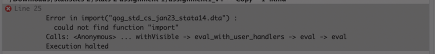
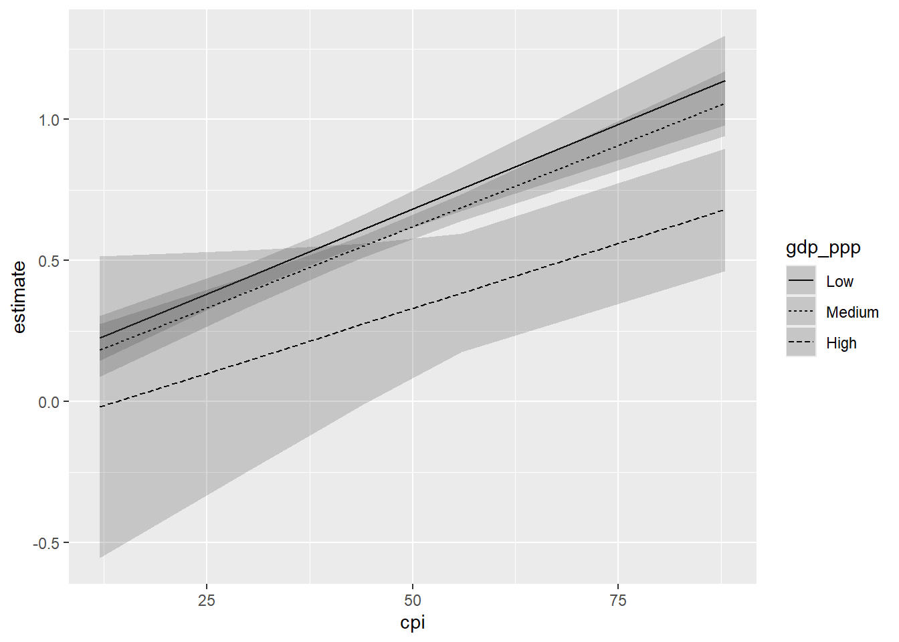

library(rio)
ess <- import("ess_nl.sav")Bijlage A — Veelgemaakte fouten
Deze appendix documenteert een aantal van de meest voorkomende fouten die kunnen optreden bij het werken met R in Statistiek II. Dit document is een aanvulling op een vergelijkbaar document voor de bewerkingen die zijn geïntroduceerd in Statistiek I (zie hier)
Als je niet zeker weet waar je moet zoeken, probeer dan in dit document te zoeken (met CTRL/CMD + F) op de foutmelding die je krijgt. Als je jouw specifieke fout niet in dit document kunt vinden, kun je de foutmelding die R geeft googelen, omdat dit vaak een mogelijke oplossing oplevert.
A.1 Je R-opdrachtbestand (.rmd) wil niet knitten naar een html-bestand
Het probleem
Je probeert je opdracht te knitten en krijgt een foutmelding zoals “No such file or directory”; meer algemeen: je kunt niet knitten naar een html
Het scenario: je bent succesvol aan het werken in het .rmd-bestand dat je hebt gekregen voor een R-opdracht. Echter, je krijgt een foutmelding zoals “No such file or directory” wanneer je het bestand probeert te “knitten” naar een html (d.w.z. R vragen om het .rmd-bestand om te zetten naar een html-bestand). Meer algemeen: alles werkt terwijl je in R Studio aan het werk bent, totdat je het uiteindelijke bestand probeert te knitten.
Er zijn verschillende mogelijke oorzaken voor dit probleem. Ze hebben echter mogelijk een gemeenschappelijke basis: wanneer je R vraagt om een bestand te “knitten”, begint R in principe met een schone lei en werkt het van boven naar onder door je .rmd-bestand. Met “schone lei” bedoelen we dat R zich zal gedragen alsof je geen libraries hebt geladen, geen data hebt geïmporteerd of regressieresultaten (etc.) hebt opgeslagen in de Environment, en dat het alle syntax die je hebt geschreven om deze dingen te doen, opnieuw gaat uitvoeren. Hier bespreken we drie manieren waarop dit het ‘knit’-proces kan laten vastlopen. Eerst geven we echter een algemeen advies:
Advies
Knit terwijl je werkt!
Als je eerder problemen hebt gehad met het knitten van een document, raden we aan om “te knitten terwijl je werkt”. Concreet: knit je .rmd-bestand (zet het om naar een html) na elk belangrijk onderdeel (bijv. na het laden van packages en je data, na vraag 1, na vraag 2…). Dit kan je helpen om sneller het specifieke probleem in je bestand te vinden en op te lossen. Als je bijvoorbeeld je document succesvol kunt knitten na de eerste drie vragen van een opdracht, maar een probleem krijgt na de vierde, dan betekent dit dat er specifiek iets met de vierde vraag is dat het proces ontregelt. Dit kan je helpen onnodige tijd en moeite te besparen die je anders zou steken in het doorwerken van de eerdere delen van het bestand.
A.1.1 De “yaml” onjuist gespecificeerd
De oorzaak
De “yaml” is onjuist gespecificeerd
Alle .rmd-documenten beginnen met iets dat de “yaml” wordt genoemd. Dit is het gedeelte van het document waarin de basiskenmerken van het bestand dat je wilt maken worden vastgelegd: de titel, informatie over de auteur, en andere basale opmaakdetails. Hier is een voorbeeld:

De “yaml” is het eerste waarmee R aan de slag gaat bij het knitten van je bestand, dus als hier een fout in staat, zal het bestand niet worden aangemaakt. We hebben drie soorten fouten gezien in inleveringen van studenten op dit vlak:
Aanhalingstekens verwijderen: de titel-, auteur- en datuminformatie moeten allemaal tussen aanhalingstekens staan. Als je deze verwijdert, leidt dit tot een fout.
Informatie toevoegen in het “sys.date()”-gedeelte: “r sys.date()” is een specifiek stukje syntax dat R vertelt om de datum op jouw computer te gebruiken als de datum in de html die wordt gemaakt. Deze algemene syntax is handig omdat we deze regel niet steeds hoeven aan te passen als we langere tijd met een bestand werken. Als je hier echter informatie toevoegt (bijv. “r sys.date(27-09-2023”), loopt R vast omdat de syntax niet zo werkt. We moesten dit specifieke opsommingspunt zelfs extra voorzichtig opmaken, omdat een fout bij het uitschrijven van de “sys.date”-informatie er in eerste instantie voor zorgde dat dit bestand niet naar html kon worden geknit!
Extra opties toevoegen: We hebben bijvoorbeeld gezien dat studenten iets als “pdf: default” toevoegen aan het format-gedeelte. R kan knitten naar pdf-bestanden, maar dit vereist dat er extra packages geïnstalleerd zijn om de omzetting van een .rmd-bestand naar een .pdf-bestand te verwerken. Het aanmaken van .pdf-bestanden kan ook wat lastig zijn. Het toevoegen van deze informatie kan dus tot fouten leiden.
De oplossing
Doe die dingen dus niet!
Concreter: je zou maar één wijziging moeten aanbrengen in het “yaml”-gedeelte - je moet de auteursinformatie bijwerken met je naam en studentnummer, en er daarbij op letten dat deze informatie tussen aanhalingstekens staat. Al het andere moet ongewijzigd blijven.
Een voorbeeld:

A.1.2 Je data niet correct importeren
De oorzaak
Je laadt data handmatig via het Files-venster in plaats van via syntax
We laden data in de R Environment, waardoor we ermee kunnen werken, via syntax. Concreet gebruiken we de import() functie uit de rio package:
We hebben gezien dat sommige studenten een andere, en minder goede, route naar hetzelfde doel nemen. Er is namelijk een “Files”-venster in R Studio dat doorgaans rechtsonder in het R Studio-venster wordt weergegeven, zo:

Hier zien we dat er een aantal databestanden staan binnen de working directory die dit .rmd-bestand bevat (bijv. “ess_nl.sav” of “demdata.rds”). We kunnen deze data mogelijk laden door op het bestand te dubbelklikken en de optie “Import Dataset” te gebruiken die dan verschijnt. Dit is echter een slecht idee. Denk erom dat R van boven naar onder door je .rmd-bestand werkt terwijl het proberen te knitten naar een html. Als je deze route neemt om je data te laden, dan zal R door de yaml heen bewegen en de nodige syntax om de rio-package te laden of om je data via import() te laden, niet vinden. Het zal niet weten dat je het bestand handmatig hebt geladen, omdat het, zoals hierboven besproken, werkt in een soort schone-lei-omgeving. Dit leidt vrijwel zeker tot allerlei fouten terwijl R door je bestand werkt, omdat je het vraagt om dingen te doen met data waarvan het niet weet dat deze bestaat, omdat je de benodigde informatie niet in het .rmd-bestand zelf hebt opgenomen.
De oplossing
Laad je data op de juiste manier.
De oplossing is simpel: gebruik de juiste syntax om je data te laden.
A.1.3 Libraries niet laden binnen het .rmd-bestand
Het probleem
Bewerkingen uitvoeren buiten het .rmd-bestand die nodig zijn voor je analyses
Dit is een algemenere versie van het vorige probleem. Misschien heb je bijvoorbeeld de rio-library geladen en je data correct geïmporteerd via syntax… maar gewoon niet in het .rmd-bestand (bijv. je hebt deze commando’s mogelijk direct ingevoerd in het Console-gedeelte van R Studio, of je hebt ze uitgevoerd vanuit een R Script dat los staat van je .rmd-bestand). Hetzelfde probleem zou dan ontstaan: jij zou toegang hebben tot de libraries en functies in kwestie om mee te werken tijdens het maken van je opdracht, maar R zou dat niet hebben wanneer het je document begint te knitten, omdat het niet in de set commando’s staat die je er rechtstreeks naartoe stuurt.
Een aanwijzing hiervoor kan te vinden zijn in de foutmelding die R je geeft. Bekijk de volgende foutmelding, overgenomen uit een foutgevoelig .rmd-bestand van een student van vorig jaar:

In dit geval loopt de student tegen een probleem aan bij het knitten. R geeft ons informatie over de specifieke input die het probleem veroorzaakt (“Error in import(….)”) en het specifieke probleem (“could not find function ‘import’”). Deze fout kan bijvoorbeeld ontstaan als rio buiten het .rmd-bestand is geladen (dat wil zeggen: het .rmd-bestand bevat geen library(rio) om de library te laden voor gebruik), zodat R geen idee heeft waar het dit commando kan vinden. (Een andere mogelijke verklaring voor deze fout staat hieronder.)
De oplossing
Houd al je stappen in hetzelfde .rmd-bestand
Dit is een type probleem dat gemakkelijk kan ontstaan, maar ook gemakkelijk kan worden opgelost: zorg ervoor dat je alle relevante syntax hebt opgenomen in het .rmd-bestand.
A.1.4 Conflicten tussen libraries/packages
De oorzaak
Twee of meer R-libraries conflicteren met elkaar en zijn zodanig geladen dat dit R doet vastlopen; packages zijn in een volgorde geladen die problemen veroorzaakt
R-libraries kunnen soms commando’s bevatten met identieke namen (bijv. zowel de tidyverse/dplyr als de car library bevatten een functie genaamd recode()). In zulke gevallen gebruikt R de functie uit de library die het meest recent/laatst is geladen. Dit kan later problemen veroorzaken; zie Hoofdstuk 9 voor meer over dit specifieke conflict.
Een andere manier waarop dit kan ontstaan, is wanneer de syntax voor het laden van de library en de syntax voor het gebruiken ervan in de verkeerde volgorde staan. Dit zou bijvoorbeeld tot een fout leiden:
demdata <- import("demdata.rds")Error in `import()`:
! could not find function "import"library(rio)Warning: package 'rio' was built under R version 4.5.3R zou hier de import-functie proberen te gebruiken, maar er zou een foutmelding ontstaan omdat de library waaruit dit commando komt op dat moment nog niet is geladen, waardoor R niet weet hoe te handelen.
De oplossing
Laad relevante libraries aan het begin van het R-document en let op mogelijke conflicten
We raden aan om je opdracht te beginnen door deze volledig door te lezen, zodat je alle stappen begrijpt die je moet uitvoeren, en vervolgens alle relevante libraries aan het begin van het document te laden, zodat R weet wat het later in het document tot zijn beschikking heeft. Dit moet op zo’n manier gebeuren dat er geen conflicten ontstaan. Hier noemen we twee specifieke bronnen van conflict, beide met de tidyverse-library:
expsscar
We raden aan om deze libraries te laden vóór het laden van de tidyverse-library om conflicten te voorkomen (of, indien nodig, een van de andere strategieën toe te passen om conflicten te vermijden die worden besproken in Hoofdstuk 9).
A.2 “contrasts can be applied only to factors with 2 or more levels”
Het probleem
Je probeert een regressiemodel uit te voeren met een binaire en/of categorische predictorvariabele en krijgt een foutmelding: “Error in contrasts<-(*tmp*, value = contr.funs[1 + isOF[nn]]) : contrasts can be applied only to factors with 2 or more levels”
We nemen binaire/categorische variabelen op in een regressiemodel door die variabele eerst om te zetten naar een factorvariabele. R neemt vervolgens automatisch het juiste aantal indicatoren voor ons op in het model. Hier is een voorbeeld waarin we proberen het niveau van kiezersopkomst in een land (vt_parl) te voorspellen op basis van of het land in het jaar 2007 een democratie of autocratie was (demo2007). We krijgen hier een foutmelding die voorkomt dat het model kan worden uitgevoerd.
# Het model uitvoeren
demo_model <- lm(vt_parl ~ demo2007, data = dta)Error in `contrasts<-`:
! contrasts can be applied only to factors with 2 or more levelsdemo_modelError:
! object 'demo_model' not found
De oorzaak
Er is een fout opgetreden bij het aanmaken van de factor, waardoor de variabele alleen niet-NA-waarden had voor één van de twee factorniveaus.
In dit voorbeeld was demo2007 een factorversie van een variabele genaamd TYPEDEMO2007. Hier zijn de eigenschappen van die variabele:
attributes(dta$TYPEDEMO2007)$label
[1] "Type of democracy, 2007"
$format.stata
[1] "%10.0g"
$labels
Autocracies Democracies
0 1 table(dta$TYPEDEMO2007, useNA = "always")
0 1 <NA>
49 104 26 De oorspronkelijke variabele is een numerieke variabele met twee waarden: 0 (verwijzend naar autocratieën) en 1 (verwijzend naar democratieën). Er zijn dan 26 observaties met ontbrekende (<NA>) data op de variabele.
Hier is de syntax die is gebruikt om de factorvariabele aan te maken die in het model hierboven wordt gebruikt:
#een factorvariabele aanmaken voor het voorbeeld:
dta <- dta |>
mutate(
demo2007 = factor(TYPEDEMO2007,
levels = c(0, 2),
labels = c("Autocracy", "Democracy"))
)Het probleem zit in het levels = c() gedeelte van de syntax. In plaats van de numerieke waarden 0 en 1 te gebruiken, hebben we hier 0 en 2 gebruikt. Als het levels = c() gedeelte echter niet overeenkomt met de oorspronkelijke waarden van de variabele die we omzetten naar een factor, dan krijgen observaties met de niet-overeenkomende waarden een NA-waarde op de nieuwe variabele (zie Hoofdstuk 2). Dit kunnen we hier zien:
levels(dta$demo2007)[1] "Autocracy" "Democracy"table(dta$demo2007, useNA = "always")
Autocracy Democracy <NA>
49 0 130 table(dta$demo2007, dta$TYPEDEMO2007, useNA = "always")
0 1 <NA>
Autocracy 49 0 0
Democracy 0 0 0
<NA> 0 104 26De 104 observaties op TYPEDEMO2007 met een waarde van 1 hebben allemaal een
De oplossing
Overschrijf variabelen niet wanneer je nieuwe variabelen aanmaakt, en controleer je werk dubbel!
Niemand is perfect, dus soms sluipen er fouten in onze poging om variabelen te hercoderen of om te zetten naar factorvariabelen. Er zijn twee, onderling samenhangende, dingen die we kunnen doen om deze problemen te minimaliseren. Ten eerste kunnen we nieuwe variabelen aanmaken in plaats van de oorspronkelijke data te overschrijven wanneer we een variabele hercoderen of omzetten naar een factorvariabele. Ten tweede kunnen we de variabelen die we hebben aangemaakt onderzoeken om dubbel te controleren of alles klopt zoals we verwachten. Het eerste punt hier maakt het tweede punt mogelijk: als we de oorspronkelijke variabele overschrijven, hebben we geen “grondwaarheid” waarmee we de nieuwe variabele kunnen vergelijken. We kunnen onze fout dan ook niet herstellen zonder onze data volledig opnieuw te laden en al onze data cleaning-syntax opnieuw te doorlopen. Als we onze oorspronkelijke data daarentegen niet overschrijven, kunnen we ons werk gemakkelijk controleren en, als we een fout zien, alleen dat specifieke deel van de syntax herstellen en opnieuw uitvoeren.
A.3 Niet het juiste aantal categorieën zien voor factorvariabelen in regressiemodellen
Het probleem
Je hebt geprobeerd een categorische variabele om te zetten naar een factorvariabele, maar er is slechts één coëfficiënt aanwezig in de regressie-output
We nemen categorische variabelen op in een regressiemodel door de variabele eerst om te zetten naar een factorvariabele. R neemt vervolgens automatisch het juiste aantal indicatoren voor ons op in het model. Als we bijvoorbeeld een categorische variabele met vier niveaus hebben, dan neemt R drie indicatoren op in het model als we de variabele succesvol omzetten naar een factorvariabele.
Stel dat we een numerieke variabele in onze dataset hebben die het bruto binnenlands product van een land weergeeft, waarbij landen zijn ingedeeld in een van drie groepen: “laag” BBP (waarde 1), gemiddeld BBP (waarde 2), en “hoog” BBP (waarde 3). We zouden deze variabele in ons model opnemen door haar om te zetten naar een factorvariabele. We zouden dan twee indicatoren voor deze variabele moeten zien in het model (waarbij de weggelaten groep als referentiecategorie fungeert). Bijvoorbeeld:
#Verdeling van de variabele
table(dta$gdp_3cat)
1 2 3
40 78 40 #Omzetten naar factorvariabele
dta <- dta |>
mutate(gdp_3cat_factor = factorize(gdp_3cat))
#Regressie uitvoeren en samenvatten
model1 <- lm(v2x_polyarchy ~ gdp_3cat_factor, data=dta)
summary(model1)
Call:
lm(formula = v2x_polyarchy ~ gdp_3cat_factor, data = dta)
Residuals:
Min 1Q Median 3Q Max
-0.67320 -0.15257 0.04909 0.17964 0.36359
Coefficients:
Estimate Std. Error t value Pr(>|t|)
(Intercept) 0.24184 0.05264 4.594 8.91e-06 ***
gdp_3cat_factor 0.14879 0.02480 6.000 1.33e-08 ***
---
Signif. codes: 0 '***' 0.001 '**' 0.01 '*' 0.05 '.' 0.1 ' ' 1
Residual standard error: 0.2218 on 156 degrees of freedom
(21 observations deleted due to missingness)
Multiple R-squared: 0.1875, Adjusted R-squared: 0.1823
F-statistic: 36 on 1 and 156 DF, p-value: 1.329e-08We hebben maar één indicator in ons model voor de factorvariabele. Waarom?1
De oorzaak
Je hebt factorize() gebruikt met niet-gelabelde data. Of je hebt factor() gebruikt, maar iets weggelaten of verkeerd gespeld in levels=c().
We kunnen een variabele op twee manieren omzetten naar een factorvariabele in R:
factor(): Dit is een ingebouwde functie die werkt met elk type data.factorize(): Deze functie komt uit derio-package.
factorize() is een handige tool, maar werkt alleen met variabelen die waardelabels hebben opgeslagen binnen de dataset. In die gevallen koppelt factorize() automatisch elke numerieke waarde aan de bijbehorende waarde. Gelabelde data komt vaak (maar niet altijd) voor wanneer de dataset in kwestie een .dta- of .sav-bestandsformaat heeft, maar komt niet vaak voor bij .csv- of .xlsx-bestandsformaten. Let op: met gelabelde data bedoelen we situaties waarin de labels binnen de dataset zelf zijn opgenomen, in plaats van alleen in een apart codeboek te staan.
We kunnen de volgende functie gebruiken om te achterhalen of een variabele waardelabels heeft in de dataset die we gebruiken: attributes().2 Hier is een voorbeeld met twee variabelen: één gelabeld en één niet-gelabeld:
#Niet-gelabeld
attributes(dta$gdp_3cat)NULL#Gelabeld
attributes(dta$Fragile2006)$label
[1] "Classification of fragile states (3-cat) (Recoded from Stable2006)"
$format.stata
[1] "%10.0g"
$labels
Fragile Intermediate Stable
1 2 3 In het eerste geval zien we de waarde “NULL”, wat betekent dat er geen waardelabels zijn opgeslagen in de metadata voor deze variabele. factorize() werkt door opgeslagen labels toe te passen op numerieke waarden, maar hier is niets om toe te passen.
In het tweede geval zien we daarentegen wel waarden gerapporteerd. De variabele in kwestie is een numerieke variabele met drie waarden: 1 (geassocieerd met het label “Fragile”), 2 (geassocieerd met het label “Intermediate”), en 3 (geassocieerd met het label “Stable”). We kunnen factorize() in dit geval gebruiken, waarbij het resulterende model het juiste aantal termen in het model rapporteert.3
dta <- dta |>
mutate(fragile = factorize(Fragile2006))
model2 <- lm(v2x_polyarchy ~ fragile, data=dta)
summary(model2)
Call:
lm(formula = v2x_polyarchy ~ fragile, data = dta)
Residuals:
Min 1Q Median 3Q Max
-0.64836 -0.14467 0.03116 0.15945 0.43393
Coefficients:
Estimate Std. Error t value Pr(>|t|)
(Intercept) 0.36907 0.02915 12.662 < 2e-16 ***
fragileIntermediate 0.14954 0.03975 3.762 0.000236 ***
fragileStable 0.36028 0.04345 8.291 4.2e-14 ***
---
Signif. codes: 0 '***' 0.001 '**' 0.01 '*' 0.05 '.' 0.1 ' ' 1
Residual standard error: 0.2162 on 161 degrees of freedom
(15 observations deleted due to missingness)
Multiple R-squared: 0.2996, Adjusted R-squared: 0.2909
F-statistic: 34.44 on 2 and 161 DF, p-value: 3.539e-13
De oplossing
factor() gebruiken in plaats van factorize()
Het ingebouwde factor()-commando is algemener toepasbaar dan factorize(). Hier specificeren we de niveaus van de factorvariabele (waarbij de referentiegroep de eerste categorie is die is opgegeven in levels=c()) en de bijbehorende labels.
dta <- dta |>
mutate(gdp_3cat_correct = factor(gdp_3cat,
levels=c(1,2,3),
labels=c("Low", "Medium", "High")))
model3 <- lm(v2x_polyarchy ~ gdp_3cat_correct, data=dta)
summary(model3)
Call:
lm(formula = v2x_polyarchy ~ gdp_3cat_correct, data = dta)
Residuals:
Min 1Q Median 3Q Max
-0.70363 -0.13534 0.06887 0.15537 0.39479
Coefficients:
Estimate Std. Error t value Pr(>|t|)
(Intercept) 0.42105 0.03484 12.086 < 2e-16 ***
gdp_3cat_correctMedium 0.08716 0.04285 2.034 0.0437 *
gdp_3cat_correctHigh 0.29757 0.04927 6.040 1.1e-08 ***
---
Signif. codes: 0 '***' 0.001 '**' 0.01 '*' 0.05 '.' 0.1 ' ' 1
Residual standard error: 0.2203 on 155 degrees of freedom
(21 observations deleted due to missingness)
Multiple R-squared: 0.2034, Adjusted R-squared: 0.1931
F-statistic: 19.79 on 2 and 155 DF, p-value: 2.224e-08Er is ook hier een manier waarop dit fout kan gaan, zoals we bespreken in Hoofdstuk 2: er is een fout in het levels = c() gedeelte. Bijvoorbeeld:
# factor met fouten:
dta <- dta |> mutate(
gdp_error1 = factor(gdp_3cat,
levels = c(1, 2),
labels = c("Low", "Medium")),
gdp_error2 = factor(gdp_3cat,
levels = c(1, 2, 4),
labels = c("Low", "Medium", "High")))
# Modellen
summary(lm(v2x_polyarchy ~ gdp_error1, data = dta))
Call:
lm(formula = v2x_polyarchy ~ gdp_error1, data = dta)
Residuals:
Min 1Q Median 3Q Max
-0.43121 -0.15467 -0.00005 0.14054 0.39479
Coefficients:
Estimate Std. Error t value Pr(>|t|)
(Intercept) 0.42105 0.03157 13.337 <2e-16 ***
gdp_error1Medium 0.08716 0.03883 2.244 0.0267 *
---
Signif. codes: 0 '***' 0.001 '**' 0.01 '*' 0.05 '.' 0.1 ' ' 1
Residual standard error: 0.1997 on 116 degrees of freedom
(61 observations deleted due to missingness)
Multiple R-squared: 0.04162, Adjusted R-squared: 0.03336
F-statistic: 5.038 on 1 and 116 DF, p-value: 0.0267summary(lm(v2x_polyarchy ~ gdp_error2, data = dta))
Call:
lm(formula = v2x_polyarchy ~ gdp_error2, data = dta)
Residuals:
Min 1Q Median 3Q Max
-0.43121 -0.15467 -0.00005 0.14054 0.39479
Coefficients:
Estimate Std. Error t value Pr(>|t|)
(Intercept) 0.42105 0.03157 13.337 <2e-16 ***
gdp_error2Medium 0.08716 0.03883 2.244 0.0267 *
---
Signif. codes: 0 '***' 0.001 '**' 0.01 '*' 0.05 '.' 0.1 ' ' 1
Residual standard error: 0.1997 on 116 degrees of freedom
(61 observations deleted due to missingness)
Multiple R-squared: 0.04162, Adjusted R-squared: 0.03336
F-statistic: 5.038 on 1 and 116 DF, p-value: 0.0267Ook hier krijgen we niet de juiste output. Het probleem in het eerste geval is dat we vergeten zijn één van de categorieën op te nemen in het levels = () gedeelte (al zou dit geen probleem zijn als het onze bedoeling was om deze observaties in de nieuwe variabele te verwijderen). Het probleem in het tweede geval is dat één van de waardeniveaus onjuist is opgegeven (4 in plaats van 3).
A.4 “Error in glm.fit…NA/NAN/Inf in ‘y’” en “not meaningful for factors”
Het probleem
We proberen een logistisch model uit te voeren waarbij onze afhankelijke variabele een factorvariabele is, maar krijgen een foutmelding die zegt “Error in glm.fit(x = c(1, 1, 1, 1, 1, 1, 1, 1, 1, 1, 1, 1, 1, 1, 1, 1, : NA/NaN/Inf in ‘y’” en “In Ops.factor(y, mu) : ‘-’ not meaningful for factors”
Stel dat we een binaire uitkomst willen voorspellen voor de vraag of een persoon aangeeft zich verbonden te voelen met een politieke partij of niet, op basis van diens leeftijd. We zouden dan een factorvariabele van de binaire uitkomstvariabele aanmaken en vervolgens de glm()-functie gebruiken, in plaats van lm(). Als we echter de volgende syntax zouden uitvoeren, zouden we tegen een foutmelding aanlopen:
#De variabele factoriseren
ess <- ess |>
mutate(close_party = factor(clsprty,
levels = c(2, 1),
labels = c("Not Close", "Close to Party")))
#Het model uitvoeren
glm(close_party ~ agea, data = ess)Warning in Ops.factor(y, mu): '-' not meaningful for factorsWarning in Ops.factor(eta, offset): '-' not meaningful for factorsWarning in Ops.factor(y, mu): '-' not meaningful for factorsError in `glm.fit()`:
! NA/NaN/Inf in 'y'
De oorzaak
We hebben geen “family” opgegeven voor het model.
De glm()-functie kan gebruikt worden om verschillende soorten modellen te fitten, afhankelijk van de aard van de afhankelijke variabele. We specificeren het type model (en dus de aard van de afhankelijke variabele) via een family=-optie. Als we geen family-optie opgeven, dan probeert glm() standaard een lineair model uit te voeren, wat een foutmelding oplevert wanneer de afhankelijke variabele een factorvariabele is.4
Oplossing
Geef de juiste family op, hier: “family =”binomial””
glm(close_party ~ agea, data = ess, family = 'binomial')
Call: glm(formula = close_party ~ agea, family = "binomial", data = ess)
Coefficients:
(Intercept) agea
-0.64393 0.01825
Degrees of Freedom: 1646 Total (i.e. Null); 1645 Residual
(26 observations deleted due to missingness)
Null Deviance: 2260
Residual Deviance: 2214 AIC: 2218A.5 “A continuous variable cannot be mapped to the linetype aesthetic”
Het probleem
We proberen een plot van voorspelde waarden te maken van een model met een interactie waarin een continue variabele is betrokken, en zien de foutmelding “A continuous variable cannot be mapped to the linetype aesthetic”
Stel dat we de democratiescore van een land voorspellen met een continue maat voor het bruto binnenlands product (gdp_ppp), een continue maat voor corruptie (cpi), en hun interactie:
inter_model <- lm(v2x_polyarchy ~ gdp_ppp*cpi, data=dta)
summary(inter_model)
Call:
lm(formula = v2x_polyarchy ~ gdp_ppp * cpi, data = dta)
Residuals:
Min 1Q Median 3Q Max
-0.58552 -0.09686 0.02947 0.13111 0.30958
Coefficients:
Estimate Std. Error t value Pr(>|t|)
(Intercept) 8.250e-02 5.643e-02 1.462 0.146
gdp_ppp -1.902e-06 3.092e-06 -0.615 0.539
cpi 1.203e-02 1.463e-03 8.220 8.34e-14 ***
gdp_ppp:cpi -2.524e-08 4.370e-08 -0.578 0.564
---
Signif. codes: 0 '***' 0.001 '**' 0.01 '*' 0.05 '.' 0.1 ' ' 1
Residual standard error: 0.1833 on 152 degrees of freedom
(23 observations deleted due to missingness)
Multiple R-squared: 0.4538, Adjusted R-squared: 0.443
F-statistic: 42.09 on 3 and 152 DF, p-value: < 2.2e-16Het interpreteren van coëfficiënten in een model met een interactie kan lastig zijn, en dat geldt des te meer wanneer beide variabelen continue variabelen zijn. Een oplossing is om de predictions()-functie te gebruiken om voorspelde waarden te verkrijgen over het bereik van onze hoofdvariabele, voor verschillende waarden van onze moderator (bijv. “laag”, “gemiddeld” en “hoog”). Bijvoorbeeld:
inter_preds <- predictions(inter_model,
newdata = datagrid(
cpi = c(12,30,40,43.94,56,88),
gdp_ppp = c(711.4, 20309.8, 111751.3)))
inter_preds
cpi gdp_ppp Estimate Std. Error z Pr(>|z|) S 2.5 % 97.5 %
12.0 711 0.2253 0.0405 5.5659 <0.001 25.2 0.1459 0.305
12.0 20310 0.1821 0.0479 3.8040 <0.001 12.8 0.0883 0.276
12.0 111751 -0.0196 0.2732 -0.0717 0.9429 0.1 -0.5550 0.516
30.0 711 0.4415 0.0248 17.8188 <0.001 233.5 0.3929 0.490
30.0 20310 0.3893 0.0282 13.7902 <0.001 141.3 0.3340 0.445
30.0 111751 0.1462 0.1995 0.7325 0.4639 1.1 -0.2449 0.537
40.0 711 0.5616 0.0251 22.3295 <0.001 364.5 0.5123 0.611
40.0 20310 0.5045 0.0210 23.9895 <0.001 420.0 0.4633 0.546
40.0 111751 0.2382 0.1608 1.4820 0.1383 2.9 -0.0768 0.553
43.9 711 0.6089 0.0275 22.1578 <0.001 359.0 0.5550 0.663
43.9 20310 0.5499 0.0199 27.6463 <0.001 556.5 0.5109 0.589
43.9 111751 0.2745 0.1463 1.8768 0.0605 4.0 -0.0122 0.561
56.0 711 0.7537 0.0392 19.2345 <0.001 271.5 0.6769 0.831
56.0 20310 0.6887 0.0241 28.5995 <0.001 595.2 0.6415 0.736
56.0 111751 0.3856 0.1071 3.5986 <0.001 11.6 0.1756 0.596
88.0 711 1.1380 0.0810 14.0449 <0.001 146.4 0.9792 1.297
88.0 20310 1.0572 0.0588 17.9733 <0.001 237.5 0.9419 1.173
88.0 111751 0.6802 0.1107 6.1456 <0.001 30.2 0.4633 0.897
Type: responseEr is hier veel data om te lezen/interpreteren. We kunnen echter een mooie plot maken om de voorspellingen samen te vatten. Helaas lopen we tegen de volgende foutmelding aan wanneer we deze syntax uitvoeren:
ggplot(inter_preds, aes(x=cpi, y=estimate, linetype = gdp_ppp)) +
geom_line() +
geom_ribbon(aes(ymin=conf.low, ymax=conf.high), alpha = 0.2)Error in `geom_line()`:
! Problem while computing aesthetics.
ℹ Error occurred in the 1st layer.
Caused by error in `scale_f()`:
! A continuous variable cannot be mapped to the linetype aesthetic.
ℹ Choose a different aesthetic or use `scale_linetype_binned()`.
De oorzaak
De variabele die wordt gebruikt om linetype (of color, etc.) te specificeren, is numeriek van waarde.
We hebben hierboven drie sets voorspellingen aangemaakt: één waarbij gdp_ppp = 711.4 en cpi een van vijf waarden uit haar bereik aannam; één waarbij gdp_ppp = 20309.8 en cpi een van diezelfde vijf waarden aannam; en één waarbij cpi = 111751.3 en cpi een van die waarden aannam. We kunnen visueel onderscheid maken tussen deze verschillende voorspellingen door ggplot() te vertellen om voor elke set een ander type lijn te gebruiken (of, mogelijk, een andere kleur). Maar de linetype-functie vereist dat de betreffende variabele een factor is.
Oplossing
Zet de probleemveroorzakende numerieke variabele om naar een factor en voer daarna het ggplot()-commando uit.
We kunnen dit probleem vermijden door de betreffende variabele om te zetten naar een factorvariabele met behulp van de factor()-functie.
#Omzetten naar factor
inter_preds <- inter_preds |>
mutate(
gdp_ppp = factor(gdp_ppp,
levels=c( 711.4, 20309.8, 111751.3),
labels=c("Low", "Medium", "High")))
#De plot maken
ggplot(inter_preds, aes(x=cpi, y=estimate, linetype = gdp_ppp)) +
geom_line() +
geom_ribbon(aes(ymin=conf.low, ymax=conf.high), alpha = 0.2)
Er zou nog een andere boosdoener kunnen zijn: ontbrekende data. Stel dat je 1 afhankelijke variabele en twee onafhankelijke variabelen hebt, waarvan er één een categorische variabele is met drie niveaus (laag, midden en hoog) en de andere een continue variabele. R laat automatisch observaties uit het model vallen die op minstens één van de variabelen in het model (afhankelijke of onafhankelijke variabele) ontbrekende data hebben. Stel dat alle observaties met een classificatie “hoog” op de categorische variabele ontbrekende (NA) waarden hebben op de continue variabele - in dat geval zou R niet de nodige data hebben om een coëfficiënt te schatten voor de categorie “hoog” en zou je daardoor waarschijnlijk maar indicatoren krijgen voor één categorie van de categorische variabele (in vergelijking met de referentiegroep) en één voor de continue variabele.↩︎
We zouden ook
attributes(dta$gdp_3cat)kunnen gebruiken voor hetzelfde doel. Het belangrijkste verschil is dat dit commando ook andere informatie over de variabele geeft.↩︎In de praktijk zouden we de
factorize()-stap natuurlijk kunnen laten volgen door een stap waarin we de variabelerelevel-en, d.w.z. de referentiegroep veranderen. We zouden in dit geval ook eenvoudigwegfactor()kunnen gebruiken en het levelen en labelen in één keer kunnen afhandelen.↩︎Wat als de afhankelijke variabele simpelweg gecodeerd was als 0/1 en niet was omgezet naar een factor? De syntax in dit voorbeeld zou dan wel werken, maar er zou een ander probleem ontstaan: het
glm()-commando zou dan een lineair model (d.w.z. een lineair regressiemodel) fitten op de data in plaats van een logistisch model. Dit is nog een reden om expliciet de te gebruiken family op te geven bij het gebruik van deglm()-functie.↩︎